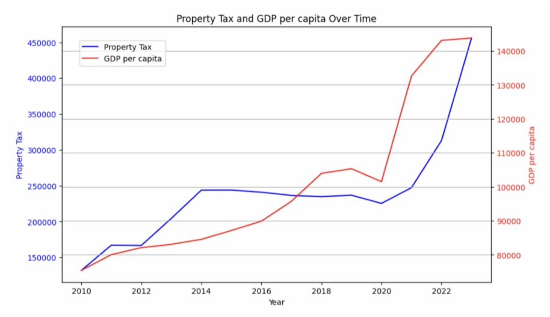
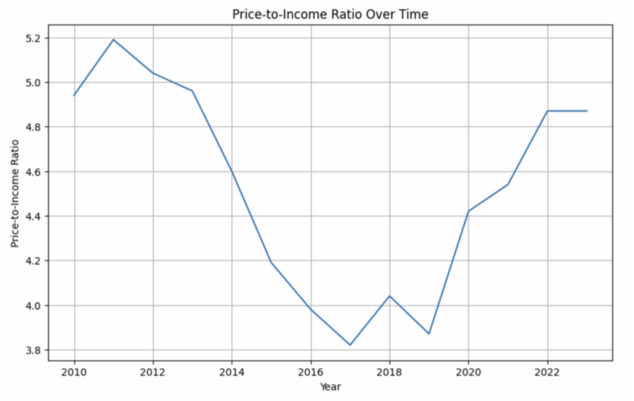
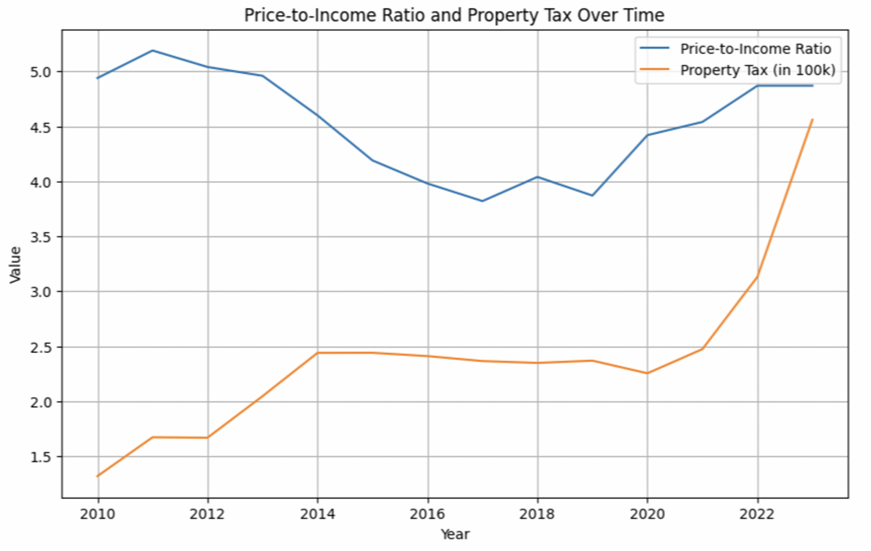

This group project for HE4045 (Quantitative Economics with Data Science) investigates how property tax revenue relates to housing affordability, economic growth, and standard of living in Singapore between 2010 and 2023. Beyond the academic angle, the project is essentially a policy analytics case study: it uses public data to answer a question that governments, real estate firms, and financial institutions all care about, namely whether taxing property actually makes housing more affordable, or whether it is just a revenue lever. The analysis combines trend analysis, correlation, and causal inference (2SLS) to move from "what happened" to "why it happened," following the same progression used in real-world business analytics: descriptive, then diagnostic, then causal.

The project was framed around a question any policy or strategy team would ask before recommending action: if property tax rises, does affordability actually improve or worsen, and does it come at the cost of broader economic wellbeing? We narrowed scope to private housing (landed property and condominiums) from 2010 to 2023, since private housing behaves more like a free market and gives a cleaner read on tax effects than the heavily regulated public housing segment.
We pulled and combined data from four public sources: IRAS property tax records, URA's private residential price index, World Bank GDP per capita, and UN Human Development Index, to build a 2010 to 2023 panel. Housing affordability was proxied using a price-to-income ratio, and standard of living was proxied using GDP per capita and HDI.


Tracked how property tax, affordability, GDP per capita, and HDI moved together over 14 years, and quantified the strength of each relationship using Pearson correlation, the same first pass any analyst would run before recommending policy or investment action.
Correlation isn't causation. Property tax and affordability both move with the broader economy, so a naive read risks the wrong conclusion. We used government debt as an instrument for property tax to isolate its causal effect on affordability, a technique for separating "these move together" from "one actually drives the other."
Tested whether GDP per capita predicts future property tax revenue (rather than the reverse), which matters for forecasting: it suggests tax revenue can be reasonably projected a step ahead of income growth trends.
Property tax showed only a weak, statistically fragile relationship with housing affordability. Even the 2SLS causal estimate was significant only at the 10% level. Tax policy alone isn't moving the affordability needle here.
Singapore's landed housing supply is capped and slow moving, so demand from high-income buyers barely reacts to tax changes, a classic case of policy tools losing power when supply can't adjust.
Property tax revenue tracked strongly with GDP per capita and HDI (r of about 0.88), pointing to its real value: funding public investment and redistribution, not short-term price control.
The takeaway isn't just academic. It's a decision-relevant insight: if a stakeholder's goal is to cool prices quickly, property tax is the wrong lever; if the goal is sustainable public funding, it's a strong one. This kind of distinction, matching the right tool to the right business objective and backing it with evidence rather than intuition, is exactly the judgment call a business or strategy analyst is expected to make when advising leadership on policy, pricing, or investment decisions.
Overall, property tax in Singapore behaves less like a short-term affordability dial and more like a fiscal engine funding long-run public investment. The strongest, most reliable relationships in the data were between property tax, GDP per capita, and HDI, not between tax and affordability directly. For any organization using policy or pricing levers to influence a market, this project is a reminder to test causal assumptions before acting on correlation, and to match the tool to the actual objective rather than the most visible one.